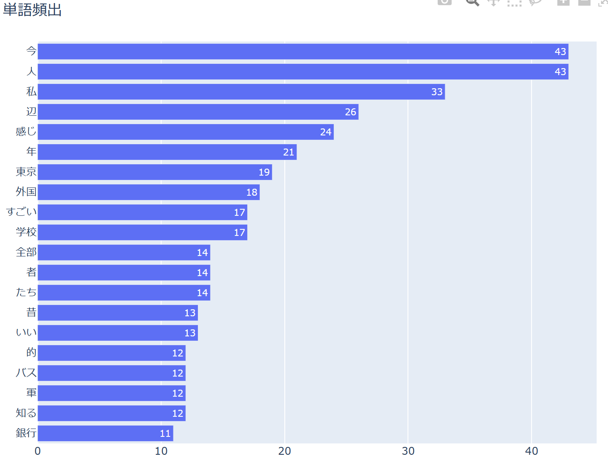
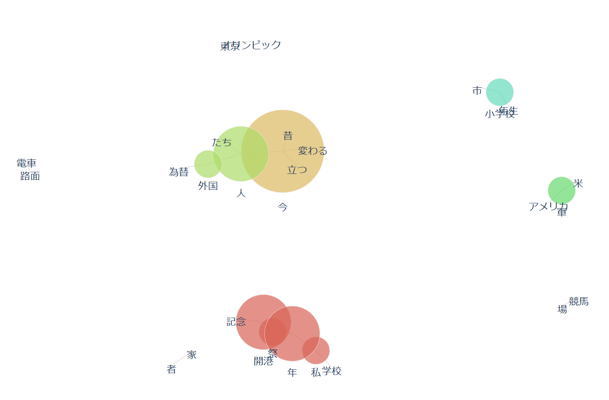
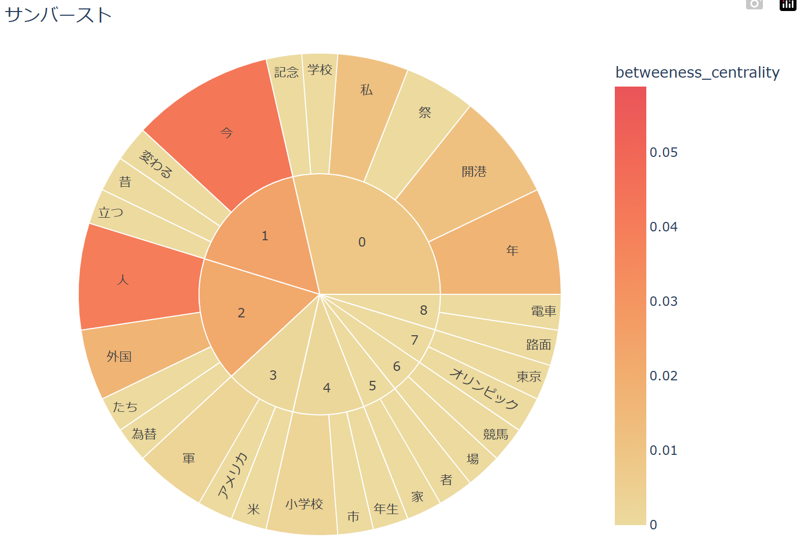

１．頻出単語

・「今」や「人」といった言葉が頻出しているため、昔との比較があるのかも
・「東京」と「外国」が独立して意味が通じる言葉の中では頻出しているため、海外との比較があるのかも
・「今」や「人」といった言葉が頻出しているため、昔との比較があるのかも
・「東京」と「外国」が独立して意味が通じる言葉の中では頻出しているため、海外との比較があるのかも
２．共起ネットワーク

・話しの話題ごとのつながりを把握することができる
・話題ごとの区切りがしっかりとあることがうかがえる
・話しの話題ごとのつながりを把握することができる
・話題ごとの区切りがしっかりとあることがうかがえる
３．サンバースト

・話題ごとに単語がきれいにまとまっている
・今や昔といった部分に関するところが為替の話との関係が深いのかもしれない
・話題ごとに単語がきれいにまとまっている
・今や昔といった部分に関するところが為替の話との関係が深いのかもしれない